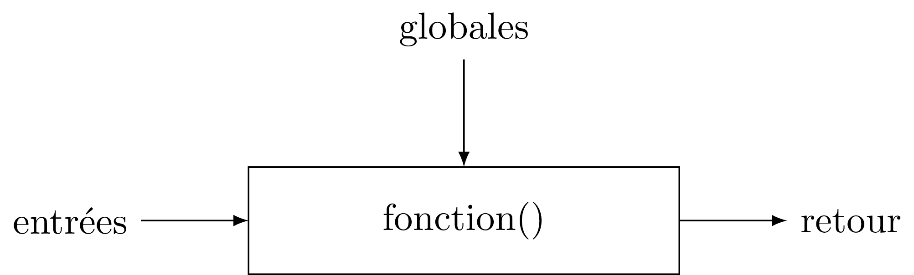

Formation Arduino
Partie 1 : Bases !
Structure d'un programme
Depuis la version 1 : programmes en .pde
# Déclarations
#define FOO 42 // define, macros #include "stuff.h" // fichier du projet #include <DmxSimple.h> // lib
- évaluées à la compilation (et remplacés)
setup()
void setup() { // init .... }
Initialisation du programme
- déclaration des entrée/sorties (E/S)
- interruptions
- variables globales
- tout pour mettre en marche...
loop()
void loop() { // init .... }
Le programme en lui même : fonction principale.
Elle boucle indéfiniment....
Pour toujours...
loop()Premier programme
void setup() { // init... } void loop() { // programme... }
Un programme (inutile mais) fonctionnel...
Sorties Numériques

pinMode()
Une broche peut être en entrée ou sortie...
il faut choisir au démarrage du programme (setup())
void setup() { pinMode(LED_BUILTIN, OUTPUT); } void loop() {}
Constantes
Arduino propose des constantes
- modes
- OUTPUT
- INPUT
- INPUT_PULLUP
- niveaux
- HIGH
- LOW
- des raccourcis...
- LED_BUILTIN
- true
- false
Allumer une LED
lancer un bout d'exo pour allumer la LED
Soluce :)
void setup() { pinMode(LED_BUILTIN, OUTPUT); } void loop() { digitalWrite(LED_BUILTIN, HIGH); }
Pour deux instructions...
digitalWrite()
- permet "d'écrire" un niveau logique sur une sortie
- active immédiatement la sortie au niveau demandé
delay(t)
- permet d'attendre un temps t... en millisecondes !
- pendant ce temps là, l'arduino ne fait rien d'autre !
Faire clignoter la LED
... le hello world en électronique...
encore un exo
Soluce :)
#define TEMPS 1000 void setup() { pinMode(LED_BUILTIN, OUTPUT); } void loop() { digitalWrite(LED_BUILTIN, HIGH); delay(TEMPS); digitalWrite(LED_BUILTIN, LOW); delay(TEMPS); }
Boucles simples
Conditions
- Tout ce qui n'est pas 0 est vrai
true || true // true true || false // true false || false // false true && true // true true && false // false false && false // false !true // false
distributif, communatif
Variables
- Définir des noms pour y mettre des valeurs :
// premier exemple : l'entier int foo = 42; // pour les autres on verra plus tard.
Opérations, Opérateurs
Maths
= // assignation - + * // vous connaissez... / // division entière % // reste de la division entière -- ++ // décrément/incrément
Logiques
== // égalité != // différent < > // inférieur/supérieur >= <= // inf/sup ou égal
While
Tant que je gagne, je joue ! ― Coluche
while (je gagne) { // je joue } // -- Arduino
- faire quelque chose tant qu'une condition est vraie...
- ou infiniment si la condition est toujours vraie (true)
Faire clignoter une LED 10 fois
Soluce
#define NB 10 // nombre de blinks #define TEMPS 1000 // intervales int i; void setup() { pinMode(LED_BUILTIN, OUTPUT); i=0; } void loop() { while (i < NB) { digitalWrite(LED_BUILTIN, HIGH); delay(TEMPS); digitalWrite(LED_BUILTIN, LOW); delay(TEMPS); i++; } }
Fonctions/Procédures
Concept
- bout de programme désigné par un nom
- peut recevoir des paramètres en entrée
- peut renvoyer une valeur
Variables et fonctions
- les variables définies dans les fonctions ne sont accessible que dedans
- les variables définies en dehors de toute fonction sont accessibles partout
Syntaxe générale
<type de retour> nom_de_la_fonction (type1, param1, etc...) { // code } // pour une procédure (sans retour) void fonction() { // code } // retour d'un entier : int fonction() { // code return un_truc; } // +42 int plus42(int n) { int temp = n+42; return temp; }
Blink en fonction !
Soluce
#define LED 13 #define TEMPS 1000 void setup() { pinMode(LED, OUTPUT); } void loop() { blink(); } void blink() { digitalWrite(LED_BUILTIN, HIGH); delay(TEMPS); digitalWrite(LED_BUILTIN, LOW); delay(TEMPS); }
Paramètrer le temps d'allumage
Soluce
#define LED 13 #define TEMPS 500 void setup() { pinMode(LED, OUTPUT); } void loop() { blink(TEMPS); } void blink(int temps) { digitalWrite(LED_BUILTIN, HIGH); delay(temps); digitalWrite(LED_BUILTIN, LOW); delay(temps); }
Conditionnelles
Et si ?
if (condition) { // fait un truc }
Et sinon ?
if (condition) { // fait un truc } else { // sinon... // ou un autre }
On (en)chaine !
if (condition A) { // truc A } else if (condition B) { // truc B } else { // sinon // truc C }